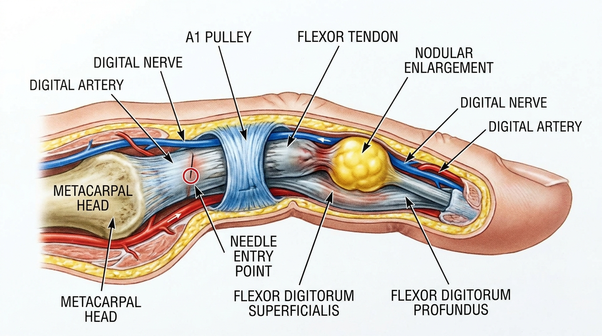

방아쇠 수지(협착성 굴곡건막염)의 A1 활차 협착과 도침 치료
반복적인 파지 및 굴곡 부하로 중수골두 부위의 A1 활차가 두꺼워지고 협착되면서, 그 아래를 지나는 굴곡건의 결절성 비대와 크기 불일치가 발생하기 때문이다. 이 협착 구간을 굴곡건 결절이 통과할 때 걸림 현상과 통증성 잠김이 나타난다.
방아쇠 수지의 병태생리: 활차-건 계면의 기계적 불일치
방아쇠 수지(Trigger Finger)는 협착성 굴곡건막염(Stenosing Flexor Tenosynovitis)의 대표적 임상 양상으로, 뒤퓌트랑 구축이나 손목터널증후군, 중수지관절염과는 명확히 구분되는 국소적 병변이다. 이 질환의 핵심 기전은 중수골두 수준에 위치한 A1 활차의 섬유성 초가 비후되어 협착을 이루는 동시에, 그 내부를 통과하는 심수지굴근 및 표재수지굴근의 결절성 비대가 병행되는 데 있다. 반복적인 파지 동작과 굴곡 부하가 지속되면 A1 활차 조직에 섬유연골성 화생(Fibrocartilaginous Metaplasia)이 유도되며, 이는 활차의 두께를 증가시켜 정상적으로 통과해야 할 건 결절과의 물리적 크기 불일치를 초래한다. 이러한 불일치는 굴곡에서 신전으로 전환되는 구간에서 건 결절이 협착된 활차 입구에 걸리는 현상으로 나타나며, 이것이 방아쇠수지 특유의 잠김(Locking), 걸림(Catching), 그리고 유발음(Triggering)의 물리적 근원이다.
이 국소적 활차-건 계면의 병변은 관절 내 병리와 명확히 구별되어야 한다. 본 증례보고에 따르면, 굴곡건막 협착으로 인한 A1 활차 비후와 건 결절 간의 기계적 불일치가 방아쇠 수지의 핵심 병태생리임을 보여주며, 이는 뒤퓌트랑 구축이나 손목터널증후군과 명확히 구분되는 국소적 활차-건 계면의 병변임을 시사한다[1].
이차적 보상 기전: 근위지간관절 과신전 부담

A1 활차 부위에서 건 결절이 반복적으로 걸리는 현상은 단순히 국소적 통증에만 국한되지 않는다. 환자는 걸림을 극복하기 위해 무의식적으로 근위지간관절(PIP joint)에 과신전(Hyperextension) 힘을 가하는 보상 패턴을 형성하는데, 이는 굴곡건이 협착 구간을 통과하는 순간 축적된 장력이 갑작스럽게 해소되며 관절에 순간적인 과부하를 전달하는 기전 때문이다. 장기간 이러한 보상 패턴이 지속되면 근위지간관절 측부인대와 관절낭의 반복적 미세 손상이 누적되어 이차적인 신전 기전 불균형이 유발될 수 있다. 이 때문에 방아쇠 수지의 치료는 단순히 통증 완화가 아니라, A1 활차와 건 결절 사이의 근본적인 크기 불일치를 해소하여 정상적인 굴곡-신전 궤적을 회복시키는 것을 목표로 해야 한다.
체계적 문헌고찰 프로토콜에서도 반복적인 파지 및 굴곡 부하가 중수골두 부위 A1 활차의 섬유연골성 화생과 비후를 유도해 건 결절과의 크기 불일치를 초래한다는 기전이 확인되며, 이는 국소적 협착 해소를 통한 건 활주로 정상화 접근법의 학술적 근거로 제시된다[2].
감별 진단: 촉지 결절, Quinnell 등급, 초음파 평가
방아쇠 수지를 관절 내 병변이나 신전 기전 장애와 명확히 구별하기 위해서는 다음의 세 가지 임상 기준이 통합적으로 활용된다. 첫째, A1 활차 부위에서 촉지되는 국소 결절(Palpable Nodule)의 유무와 위치를 확인한다. 둘째, Quinnell 등급 분류를 통해 방아쇠 현상의 중증도를 0등급(정상 굴곡)부터 4등급(고정된 잠김)까지 단계화하여 평가한다. 셋째, 초음파를 이용해 A1 활차의 두께와 굴곡건 결절의 크기를 정량적으로 측정함으로써 협착 정도와 건 비대의 상관관계를 시각적으로 확인한다.
| 평가 항목 | 방아쇠 수지 (A1 활차 협착) | 관절 내 병변/신전기전장애 |
|---|---|---|
| 촉지 결절 | A1 활차 위치에서 명확히 촉지됨 | 관절선 부위 또는 신전건 부위 |
| 증상 발생 시점 | 굴곡-신전 전환 구간에서 걸림 | 전 범위 관절운동 시 통증 |
| 초음파 소견 | A1 활차 두께 증가, 건 결절 비대 | 관절 활막 비후 또는 신전건 손상 |
| Quinnell 등급 | 0~4등급으로 단계화 평가 가능 | 해당 등급 체계 미적용 |
A1 활차 부위의 국소 촉지 결절, Quinnell 등급에 따른 방아쇠 증상의 단계, 그리고 초음파로 확인되는 활차 두께 및 건 결절의 비대 소견을 종합하여 관절 내 병변이나 신전 기전 장애와 감별한다.
도침을 이용한 A1 활차 정밀 절개 기전
바디올한의원의 도침 유착 박리술 임상 경험에서 관찰되는 A1 활차 협착 부위의 국소적 압박 완화 경향은, 인용된 학술 연구[1]에서 입증된 굴곡건 축과 평행한 도자 방향 설정을 통한 신경혈관 다발 손상 최소화 및 피하 섬유성 유착대의 조절적 절단 기전과 학술적으로 궤를 함께합니다. 도침 시술 시 자입점은 원위 수장 횡문(Distal Palmar Crease)과 중수골두를 기준으로 정밀하게 설정되며, 도자의 방향은 굴곡건의 주행축과 평행하게 유지되어야 한다. 이는 건 조직의 열상(Laceration)을 방지하고, 인접한 지신경(Digital Nerve) 및 지동맥(Digital Artery)으로 구성된 신경혈관 다발의 손상을 최소화하기 위한 필수적 원칙이다.
구체적인 시술 과정에서는 협착된 A1 활차의 섬유성 초를 종축 방향으로 절개하여, 활차와 건 사이의 계면을 조절적으로 감압한다. 이 접근법은 국소적 협착 해소를 통해 건 결절이 걸리지 않고 원활하게 활주할 수 있는 공간을 물리적으로 확보하는 데 초점을 맞춘다. 협착성 굴곡건막염에서 초음파 유도하 도침을 이용해 A1 활차를 종축 방향으로 정밀하게 절개하면 건 결절이 신전-굴곡 전환 구간에서 걸리는 크기 불일치를 해소하여 급성 통증과 방아쇠 현상을 즉각적으로 완화할 수 있다[1].
시술 후 기전: 건 활주 회복과 마찰 감소
A1 활차의 정밀 절개 이후 관찰되는 핵심 변화는 건 활주 이동거리(Tendon Gliding Excursion)의 회복이다. 협착이 해소된 활차 구간을 건 결절이 저항 없이 통과함으로써 활차-건 계면의 마찰이 현저히 감소하며, 이는 곧 손가락의 굴곡-신전 궤적이 정상화되는 결과로 이어진다. 이러한 시술 원리는 관절 및 연부조직의 유착과 협착을 비침습적으로 박리하여 활주 기능을 회복시키는 보존 치료 접근법의 기전적 근거와 일치하며, 근골격계 연부조직의 유착과 협착을 비수술적으로 박리하여 관절 가동범위와 기능을 회복시키는 원리와 궤를 같이 한다[2].
바디올한의원의 생체역학적 공간 감압 추나(SART Protocol)는 방아쇠 수지의 이차적 보상 패턴으로 인해 근위지간관절 및 중수지관절 주변에 형성된 연부조직 긴장을 완화하는 보조적 접근으로 고려될 수 있다. 이는 활차 협착 해소 이후 손가락 전체의 생체역학적 균형을 재정립하는 과정에서, 도침 치료와 병행 가능한 비수술적 보존 치료 대안 중 하나로 검토된다.
참고문헌
- Ou, et al. (2025), 'Ultrasound-guided acupotomy release of A1 pulley in the treatment of trigger thumb: A case report', Medicine. DOI: 10.1097/md.0000000000042877
- Jia, et al. (2019), 'Acupotomy for patients with trigger finger', Medicine. DOI: 10.1097/md.0000000000017402